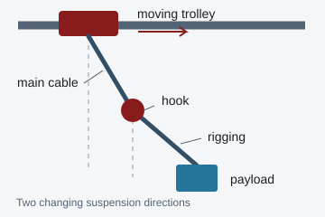
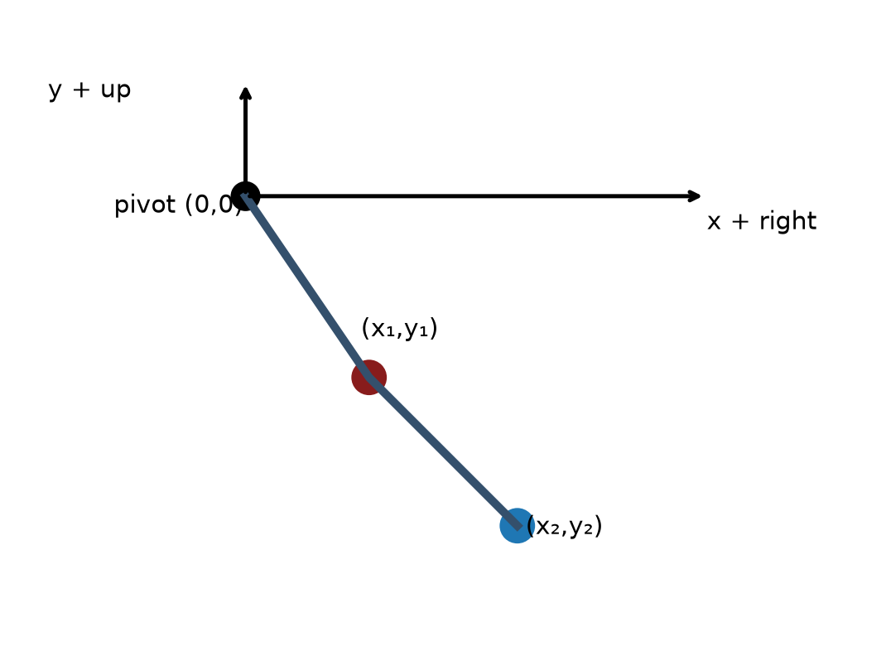

Two connected links can move together, oppose one another, or exchange motion. In Lab 3, you will measure both link angles and test how well a model predicts their motion.
Start here · Engineering applications
Why would an engineer study two pendulums?
When one moving part is attached to another, the motion of each affects the other. We call this coupled motion. A model of only one part can miss an important oscillation. This experiment gives you a simple, visible way to learn how to measure that motion and check a model before trusting its predictions.
A direct mechanical application
Cranes: a swinging hook and load

A crane can have a heavy hook on its main cable and a load hanging below the hook. Both can swing. Moving or stopping the trolley can excite both motions, so the load may still be moving after the trolley has stopped.
Why it matters: Engineers plan acceleration and braking to reduce residual sway, place the load accurately, and shorten settling time.
What this lab teaches: Track both bodies, identify the important oscillation frequencies, and check how mass and length affect the prediction. Our fixed pivot lets us study free motion; a working crane adds a moving trolley and control inputs.
A robot arm may have a shoulder joint, an elbow joint, and a tool or payload at its tip. Accelerating one link changes the motion and the forces experienced by the other. Treating the links as independent can give a poor prediction of the tool's path.
Why it matters: A coupled model helps engineers choose joint torques and move a tool accurately along a planned path.
What this lab teaches: Measure the masses and lengths, define each angle, and compare measured motion with a two-link model. Our links move freely under gravity; a robot adds motor torques, and some robots move in a horizontal plane.
Liquid fuel can move inside a tank when a spacecraft accelerates or rotates. This motion is called sloshing. It changes the vehicle's center of mass and applies forces and torques to the tank and spacecraft.
Why it matters: NASA has used a two-pendulum equivalent model for Europa Clipper propellant slosh to help predict loads and support attitude-control design.
What this lab teaches: A simple model can represent important frequencies and motion, but it must be checked against data. These fuel-model pendulums represent liquid modes; their arrangement and parameters differ from our two links in series.
Original teaching schematics, not to scale. The sources above describe the engineering applications; the connections to our experiment explain the skills you will practice.
The engineering question: How much motion can a simple model predict, and what changes when the release angle, measured mass, length, or initial condition changes? In this lab, you will test the prediction with real video data. You will not design a crane or robot controller.
Files for your laboratory section
Use the laboratory guide for the complete procedure and report requirements. The lecture explains the theory; the notebook lets you explore it before your section. Download the full MATLAB bundle so the scripts can find their helper functions.
Laboratory guide
Fall 2026 procedure, apparatus, camera settings, four trials, analyzer V4, MAT format, required figures and troubleshooting.
Prior course apparatus photograph. Find the fixed pivot, upper joint/bob and lower bob before tracking.
The upper link joins the fixed pivot to the first moving joint. The lower link joins that joint to the lower bob. Two degrees of freedom means that two independent angles are needed to specify the configuration. Measure both bar masses, the bob and hardware masses, and the pivot-to-center lengths; the model includes the masses of both bars.
Example recording from the course
Example recording from the course folder; your experiment requires your own new videos and measured settings. For annotated small-motion mode demonstrations, see the lecture video section.
Plan four release cases
Record one small, nonzero aligned-link release and at least three larger-angle releases. Include two similar but distinct starts. Record the actual initial angles visible in your video rather than only the angles you intended to set. Document whether the links were released from rest or received an unintended push.
Case
What to look for
Why record it?
Small aligned-link release
Regular motion with contributions from one or both small-motion modes; aligned links do not necessarily give a pure mode.
Test the small-angle prediction and establish the measurement convention.
Larger-angle release
A changing motion pattern, possibly with strong interaction between the links.
Check where a linear prediction becomes less useful.
Another larger-angle release
A different combination of initial link angles.
Compare how the starting configuration changes the response.
A nearby, distinct start
Compare it with one of the other larger-angle cases using the measured starting angles.
Explore sensitivity while accounting for tracking error and an unintended release velocity.
Keep the original camera capture frame rate, calibration distance, measured masses and lengths with every trial. A large release angle does not automatically imply chaotic motion. A short pair of different traces alone does not prove chaos.
From camera frames to two angle histories
The camera records images. The analyzer tracks the two bob centers and converts their pixel positions into distances. The analysis script then calculates angles, angular velocities, and frequency spectra. Each stage needs a check before you trust the next one.
Record the complete motion. Set 1280 × 1024 and nominal 1000 capture frames/s, or document the actual camera setting. Keep the pivot and both bobs in view; check focus and contrast throughout the motion.
Save the raw H.264 MP4 and camera settings. The MP4 playback rate is not the capture rate. A slow-motion export does not change the physical interval between the original captured frames.
Track in Pendulum Motion Analyzer V4. Select Double Pendulum, enter capture fps, calibrate the mark separation, locate the fixed pivot and both centers, run Quick Review, then analyze all frames. Inspect crossings and occlusions carefully so the two identities do not swap.
Save the MAT file. Its ExpData matrix contains time in seconds and four positions in millimeters, in the order shown below. The app reports right-positive horizontal positions and up-positive vertical positions relative to the fixed pivot.
Extract the experimental plots. Run Run_Lab3_ExpData_Analysis.m and select the saved MAT file. Check both absolute angles, both angular velocities, and both spectra. The script reports tracked link lengths and the time spacing; use those to catch bad tracking or a wrong capture rate.
Calculate a matching prediction. Run Run_Lab3_Simulation.m with your measured masses, lengths, release angles and initial angular velocities. Use the same physical time interval as the experiment when comparing curves. This is a separate prediction script; the experimental analysis script does not automatically fit or overlay a theoretical curve.
MAT column
Symbol
Physical meaning
Unit
1
t
Time assigned to the tracked frame
s
2, 3
x1, y1
Horizontal and vertical positions of the upper joint/bob relative to the fixed pivot
mm
4, 5
x2, y2
Horizontal and vertical positions of the lower bob relative to the fixed pivot
mm

Define the angles first:θ1 is the upper link's absolute angle from the downward vertical. θ2 is the lower link's absolute angle from the same vertical direction. Both are approximately zero when both links hang straight down. The lower link's direction is found from the displacement between the two moving centers:
θ1 = unwrap(atan2(x1, −y1))
θ2 = unwrap(atan2(x2 − x1, −(y2 − y1)))
atan2 finds the angle using both displacement components and their signs. unwrap removes artificial jumps of a full revolution so continuous rotations remain continuous. Its outputs here are radians; the script labels angle plots in degrees. θ2 is an absolute angle; the relative angle at the moving joint would be θ2 − θ1. Check a known frame before processing every trial.
Run the scripts, not the helper functions. First run Test_Lab3_Model.m, then Run_Lab3_Simulation.m with your measured parameters, and Run_Lab3_ExpData_Analysis.m on each saved MAT file. Do not click Run inside MIE402_Lab3_RHS.m or MIE402_Lab3_Energy.m; they need input arguments. Lab 3 does not use sineFit.m: two coupled links generally do not produce a single sine wave.
What do your plots tell an engineer?
Evidence in your data
Physical interpretation
Connection to the applications
Two angle histories
Look at how the upper and lower links move relative to one another. A changing amplitude pattern can result from a combination of modes.
A crane needs both hook and load motion; a robot needs both joint motions.
Small-motion spectra and angle patterns
A normal mode is a coordinated oscillation pattern with a single frequency and a fixed ratio of link amplitudes. A mixed release can show both frequencies. One mode can be weak or unresolved; two visible peaks are not guaranteed in every trace.
Knowing the important frequencies helps engineers avoid exciting unwanted motion. Peak locations alone do not identify a mode: also check the two-angle pattern and the model prediction.
Larger-angle motion
The full nonlinear prediction accounts for changing geometry. Small-angle natural frequencies are useful reference values, but a large-motion spectrum need not contain only those two peaks.
Model validity depends on the operating conditions. A model validated for small motion may give a poor prediction for a much larger disturbance.
Measured amplitude decay and model mismatch
The baseline model omits pivot friction and air drag. Tracking error, imperfect initial conditions and mass/length errors can also explain disagreement. Do not attribute every difference to drag.
Engineers distinguish missing physics from bad inputs and measurement errors before changing a design or controller.
Energy explains why the two links cannot be treated independently
As the bobs fall, gravitational potential energy becomes kinetic energy. As they rise, that exchange reverses. The lower bob's velocity depends on the motion of both links, so its kinetic energy couples the two angles. One link can become quieter while the other becomes more active even in an ideal model with no energy loss.
Total mechanical energy should remain nearly constant in the undamped simulation. The simulation's energy check helps detect a numerical problem; it does not prove that the model describes the real apparatus. In the real experiment, friction and drag can remove energy and reduce amplitudes.
For frequency analysis, label peaks in Hz and state the record duration. A longer useful record gives closer frequency-bin spacing. The FFT summarizes frequency content over the chosen interval; it does not replace the time histories or prove chaos.
Check one complete trial before leaving
Both bobs remain correctly identified; tracked link lengths stay close to the measured lengths.
The angle signs match a known frame and no unexplained tracking jumps remain.
The MAT time spacing agrees with the actual capture rate and any documented frame skipping.
You can open the raw video, MAT file, angle plots, angular-velocity plots and spectra.
Your notes include masses, lengths, camera settings, calibration and actual starting conditions.
Show one full trial set to your GTA before leaving. If a plot looks wrong, inspect the tracking and inputs while the apparatus is still available.
Combined Labs 2–3 report: tentatively due November 2; check Canvas. Follow the laboratory guide and report guide for the assigned deliverables.